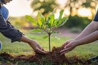
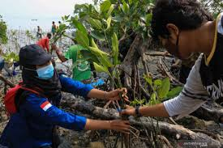

Salam Serviam!
Perkenalkan, nama saya Sydney dari kelas IX-3, absen 11.
Pada kesempatan ini, saya membuat sebuah website untuk mendalami makna peduli lingkungan, serta memahami mengapa kesadaran terhadap kelestarian alam sangat penting sekarang. Melalui pembahasan ini, kita akan melihat bagaimana sikap peduli lingkungan dapat diterapkan dalam kehidupan sehari-hari hingga partisipasi dalam kegiatan pelestarian alam. Selain itu, akan dibahas pula tantangan yang dihadapi serta dampak positif yang dapat dirasakan jika kita bersama-sama menjaga lingkungan.
Dengan memahami pentingnya peduli lingkungan, saya berharap kita dapat menjadi lebih sadar dan terdorong untuk berperan aktif menjaga bumi agar tetap indah dan nyaman untuk generasi sekarang maupun berikutnya.
Yuk, kita kenali lebih dalam arti peduli lingkungan dan lihat bagaimana kita dapat membantu menciptakan masa depan yang lebih bersih, sehat, dan berkelanjutan!